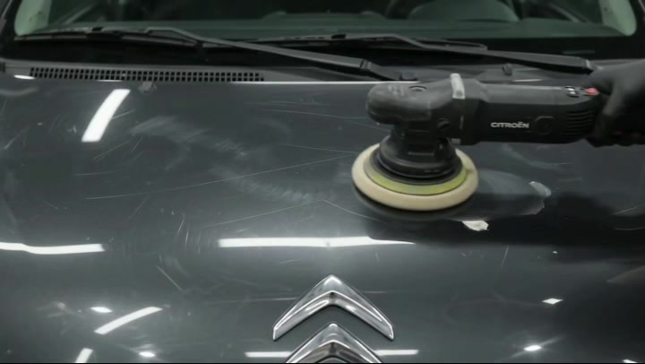

Paint polishing
Under directed light, fine surface marks interrupt the reflection across a dark bonnet. A test section helps establish how much improvement is realistic before the larger panel is polished.
Choose a service ↓
Inspection light
The reflected strip light makes changes in gloss easier to inspect from a consistent angle.
Refine the reflection
Assess
Inspect clean, prepared paint under a light and test a small area before choosing the combination.
Refine
Work in small sections with a suitable pad and polish, checking the result as you go.
Buff
Remove residue with a clean microfibre towel and inspect the reflections from another angle.
Service notes
Who is it for?
Light swirling or a dull-looking bonnet on suitable gloss paint.
What is covered?
Paint assessment, a test section, machine refinement of the selected panels and a residue wipe.
Scope and preparation
The panel must be clean and prepared first. Deeper defects and paint repairs need separate assessment. Flag repainted panels, matte finishes, wraps and coatings before choosing a polishing service.
Will every scratch disappear?
The result depends on the paint and defect depth. A test section shows what can be improved with the proposed process.